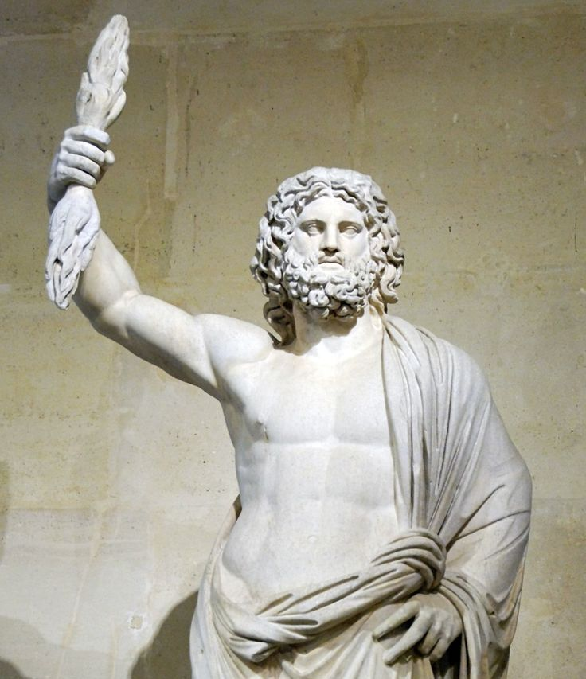

How to Answer 8-Mark Questions
Master the detailed response questions in Myth and Religion
What are 8-Mark Questions?
8-mark questions are detailed response questions that test both your knowledge (AO1) and your ability to analyse and evaluate (AO2). They appear throughout the Myth and Religion paper and require you to:
- Use a source as your starting point (image or text extract)
- Add your own knowledge from the topics you've studied
- Make judgements and evaluate different viewpoints
- Write in paragraph form with clear arguments
Example Question
Source A

Classical statue of Zeus with thunderbolt
'Greek gods were too human-like to inspire genuine religious awe.' How far do you agree with this assessment? Use Source A as a starting point and your own knowledge in your answer.
[8]
Assessment Objectives
8-mark questions test two Assessment Objectives equally - you need both to reach the top levels:
AO1: Knowledge & Understanding (4 marks)
Demonstrate accurate knowledge of classical sources and their contexts
You can show this through:
- Specific details from the source
- Names of gods with correct Greek forms
- Iconography and symbols (Zeus's thunderbolt, Athena's owl)
- Mythological stories and their context
- Religious practices and beliefs
- Epithets and roles of gods
AO2: Analysis & Evaluation (4 marks)
Analyse, interpret and evaluate to form judgements
You can show this through:
- Arguing for/against the statement
- Weighing up different viewpoints
- Drawing conclusions from evidence
- Explaining why something was significant
- Making connections between examples
- Reaching a balanced judgement
Key Point: The examiners use a "best fit" approach - you need roughly equal amounts of both AO1 and AO2 to reach the higher levels. A purely descriptive answer won't score highly, even with lots of knowledge.
Mark Scheme Levels
Understanding the levels helps you target the right grade. Here's what examiners look for at each level:
Level 4
7-8 marks
- Consistently accurate and detailed knowledge of sources and wider context
- Well-argued response supported by range of well-selected evidence
- Includes critical analysis, interpretation and evaluation
- Shows very good understanding of cultural contexts
Level 3
5-6 marks
- Accurate knowledge using both source and own knowledge
- Focused response supported by range of evidence
- Includes relevant analysis, interpretation and evaluation
- Shows good understanding of contexts
Level 2
3-4 marks
- Sound, mostly accurate knowledge using source and own knowledge
- Engages with general topic supported by limited evidence
- Includes some analysis, interpretation and evaluation
- Shows some understanding of contexts
Level 1
1-2 marks
- Limited knowledge - may only use source material
- Little attempt at basic explanation
- Includes isolated analysis, interpretation and evaluation
- Shows limited understanding of contexts
How to Structure Your Answer
Follow these 5 steps to create a well-organised response:
1
Address the Question
Give your initial judgement on the statement - do you agree, disagree, or think it's partially true?
2
Use the Source
Pick specific details from the source and explain what they show about the topic
3
Add Your Knowledge
Bring in examples from your studies that support or challenge the statement
4
Consider Alternatives
Show you understand different viewpoints - what might someone argue on the other side?
5
Reach a Conclusion
Make a final judgement based on the evidence you've presented
Time Management
Aim for about 12-15 minutes per 8-mark question. Spend 2-3 minutes planning your key points, then write fluently using your planned structure.
Student Examples
Let's look at how different students approached our example question. Click on each student to see their answer:
Student A
Level 1
Greek gods looked like humans and had human emotions like being jealous and angry...
1-2 marks
Student B
Level 2
I disagree with this assessment because Greek gods were both human-like and divine...
3-4 marks
Student C
Level 3
I partially agree with this assessment, as Greek gods combined human characteristics...
5-6 marks
Student D
Level 4
I disagree with this assessment. Greek gods were not too human-like to inspire religious awe...
7-8 marks
Tips for Success
Always Use the Source
Pick specific details from images or texts - don't just describe what you see, explain what it shows about the topic
Address the Question
Make sure every paragraph relates back to the specific question asked - don't just write everything you know about the topic
Show Different Views
The best answers consider multiple perspectives - what would someone who disagrees with you argue?
Use Specific Details
Names, epithets, symbols, specific myths - the more precise your knowledge, the higher your AO1 marks
Explain Significance
Don't just state facts - explain WHY they matter for answering the question
Quality over Quantity
It's better to make fewer points well-supported with evidence than to list many facts without explanation
Common Mistakes to Avoid
- Ignoring the source - you must use it as your starting point
- Just describing - you need to analyse and evaluate, not just list facts
- Being one-sided - consider different viewpoints for higher marks
- Using only the source - you need your own knowledge too
- Writing a story - avoid narrating myths without explaining their significance
- Generic answers - make sure you're answering the specific question asked
Examiner Commentary: